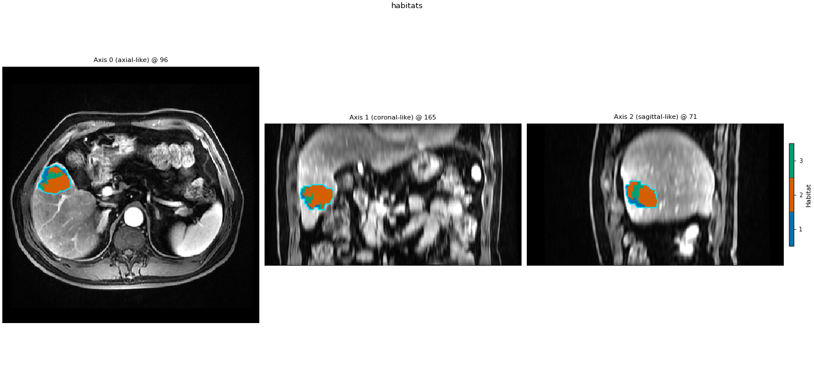
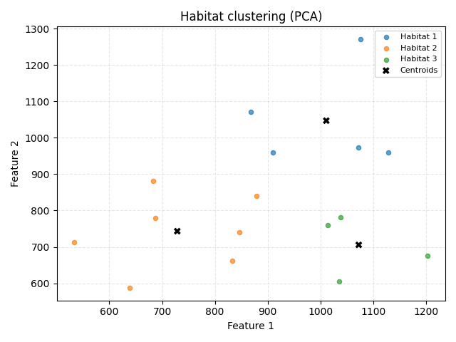

Note
Go to the end to download the full example code.
Atomic operators
Each subject-level step is a single-argument callable. Call
op(subject) (or op(field)) with no Study.
Voxel features:
voxel(subject)→VoxelFeatureFieldSupervoxels:
svx(field)→SupervoxelizationFit (cohort):
fitter.fit(units, cohort=...)→HabitatModelAssign:
model.assigner()(units)→HabitatMapPipeline:
pipe(subject)→HabitatMap
Load two demo subjects and build the voxel extractor + supervoxelizer as plain callables.
from pathlib import Path
import matplotlib.pyplot as plt
import numpy as np
from habit.contracts import cohort_from_directory
from habit.datasets import fetch_demo
from habit.execution import SerialBackend
from habit.habitat_features import (
HabitatVolumeFeatures,
IthHabitatFeatures,
MsiHabitatFeatures,
)
from habit.habitat_model import KMeansHabitatModelFitter
from habit.pipeline import SubjectPipeline
from habit.supervoxel import KMeansSupervoxelizer
from habit.viz import plot_habitat_clustering_pca_2d, plot_habitat_overlay
from habit.voxel_features import RawVoxelFeatures
DATA = fetch_demo()
MODALITIES = ["LAP", "PVP"]
ROI = "LAP"
cohort = cohort_from_directory(DATA, modalities=tuple(MODALITIES), roi=ROI)[:2]
print(f"Cohort: {len(cohort)} subjects -> {list(cohort.subject_ids)}")
voxel = RawVoxelFeatures(modalities=MODALITIES)
svx = KMeansSupervoxelizer(n_supervoxels=8, n_init=3)
svx.set_random_state(7)
HABIT demo data (cached)
DATA (preprocessed root): C:\Users\dongm\.habit_data\demo-data-v1\preprocessed
On-disk inventory of this folder:
subjects (5): subj001, subj002, subj003, subj004, subj005
image series: LAP, PVP, delay_3min, pre_contrast
mask keys: LAP, PVP, delay_3min, pre_contrast
example image: images/subj001/delay_3min/WATER__BH_Ax_LAVA_Flex_3min_Series0012.nrrd
example mask: masks/subj001/delay_3min/WATER__BH_Ax_LAVA_Flex_10min_Series0017_mask.nrrd
Your own data must use the same folder tree (change IDs / series names):
DATA/
images/<subject_id>/<modality>/<one image file>
masks/<subject_id>/<roi>/<one mask file>
Then load it with the same call the demos use:
cohort = cohort_from_directory(DATA, modalities=("LAP",), roi="LAP")
Swap DATA / modalities / roi to match your tree. Mask key is often the
same as one image series (here LAP).
Cohort: 2 subjects -> ['subj001', 'subj002']
Voxel-feature table for the first subject. Each row is one ROI voxel.
subject0 = cohort[0]
field = voxel(subject0)
print(field.feature_frame().head())
field.feature_frame().head()
LAP PVP
0 1020.0 1030.0
1 1018.0 1068.0
2 1077.0 1088.0
3 1073.0 1072.0
4 1033.0 1132.0
Supervoxels, then a cohort-level k-means fit. Print unit counts so the partition is visible before assignment.
units0 = svx(field)
print(f"n_units={len(units0.features)}, label_max={int(units0.label_array.max())}")
print(units0.feature_frame().head())
units0.feature_frame().head()
units = [svx(voxel(subject)) for subject in cohort]
fitter = KMeansHabitatModelFitter(
n_habitats=3,
n_init=5,
validation="elbow",
min_habitats=2,
max_habitats=3,
)
fitter.set_random_state(7)
model = fitter.fit(units, cohort=cohort)
print(model.summary())
n_units=8, label_max=8
LAP PVP
0 832.807164 661.547966
1 1076.188828 1271.145719
2 639.044990 587.075639
3 878.936817 839.676387
4 1013.517983 759.499715
HabitatModel kmeans-d5f8b807884c4c02
habitats : 3
features (2) : LAP, PVP
defining cohort : n=2
modalities : LAP, PVP
cohort digest : cc1b16a34cc7478d...
produced by : habitat_model_fitter.kmeans
habit version : 2.0.0
random seed : 7
preprocessing state: inertia, validation
Bind extract + partition + assigner as a
SubjectPipeline and overlay the labels.
apply_pipe = SubjectPipeline(voxel, svx, model.assigner())
habitat_map = apply_pipe(subject0)
present = sorted(int(v) for v in np.unique(habitat_map.label_array) if int(v) != 0)
print(f"habitats_present={present}, model_id={model.model_id}")
table = apply_pipe.extract_features(
subject0,
[HabitatVolumeFeatures(), MsiHabitatFeatures(), IthHabitatFeatures()],
)
print(table.frame.head())
table.frame.head()
fig = plot_habitat_overlay(
subject0.image(ROI),
habitat_map,
title="habitats",
)
Path("out").mkdir(exist_ok=True)
fig.savefig("out/habitat_atomic_overlay.png", dpi=150, bbox_inches="tight")
plt.show()

habitats_present=[1, 2, 3], model_id=kmeans-d5f8b807884c4c02
subject habitat_1_voxel_count ... energy ith_score
0 subj001 7861.0 ... 3.98253 0.964273
[1 rows x 30 columns]
F:\work\habit_project\habit\viz\habitat_overlay.py:640: UserWarning: Display geometry conflict: image/anatomy direction does not match mask/label direction. Using the mask/label direction so coronal/sagittal superior-up follows the labelled anatomy. Pass direction= to override.
resolved_direction, resolved_spacing = resolve_display_geometry(
Population-level PCA of clustering units (supervoxel rows). Colour is nearest-centroid habitat id; crosses are the fitted cohort centres.
feature_names = list(model.feature_names)
unit_matrices = [
np.asarray(unit.features[feature_names].to_numpy(dtype=np.float64))
for unit in units
]
pca_features = np.vstack(unit_matrices)
pca_labels_parts = []
for matrix in unit_matrices:
distances = np.linalg.norm(
matrix[:, None, :] - model.centroids[None, :, :], axis=2
)
pca_labels_parts.append(np.argmin(distances, axis=1).astype(np.int64) + 1)
pca_labels = np.concatenate(pca_labels_parts)
fig_pca = plot_habitat_clustering_pca_2d(
pca_features,
pca_labels,
centers=model.centroids,
title="Habitat clustering (PCA)",
)
fig_pca.savefig("out/habitat_atomic_pca_2d.png", dpi=150, bbox_inches="tight")
plt.show()
maps = cohort.map(apply_pipe, backend=SerialBackend())
print(f"cohort.map -> {len(maps)} habitat maps")

Cohort.map[SubjectPipeline]: 0%| | 0/2 [00:00<?, ?it/s]
Cohort.map[SubjectPipeline]: 50%|█████ | 1/2 [00:01<00:01, 1.41s/it]
Cohort.map[SubjectPipeline]: 100%|██████████| 2/2 [00:02<00:00, 1.49s/it]
Cohort.map[SubjectPipeline]: 100%|██████████| 2/2 [00:02<00:00, 1.49s/it]
cohort.map -> 2 habitat maps
Total running time of the script: (0 minutes 13.217 seconds)